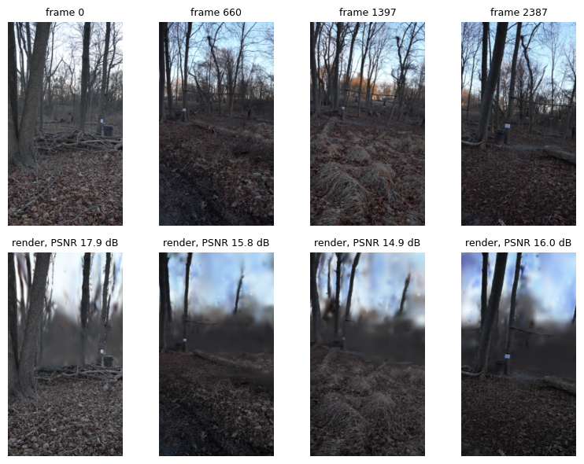

Training Splats#
Gaussian splats turn the keyframes, cameras and point cloud into a scene you can render from any view. The splats stage trains Scaffold-2DGS: a sparse set of anchors, each decoding small flat Gaussian disks with a tiny network. No later stage reads the splats; they are a final output.
[1]:
import json
import matplotlib.pyplot as plt
import numpy as np
import pandas as pd
import torch
from collab_splats.preproc import frames
from collab_splats.splats import load_checkpoint, render_views
from collab_splats.utils.image import open_image, resize_image
from collab_splats.utils.io import to_uint8_hwc
%run ../tutorial.py
scene = tutorial_scene("preproc", "pointcloud", "splats")
1. Configuration#
The settings the scene trained with. The tutorial trains 3,000 steps; the production default is 30,000, so these renders are softer. Scaffold decodes color with its network, so it has no spherical-harmonics settings.
[2]:
print(json.dumps(scene.config["splats"], indent=2))
{
"enabled": true,
"primitive": "2dgs",
"representation": "scaffold",
"max_steps": 3000,
"resolution_schedule": 300,
"losses": {
"opacity_reg": {
"weight": 0
},
"scale_reg": {
"weight": 0
},
"distortion": {
"weight": 0.01,
"start": 300
},
"normal_consistency": {
"weight": 0.05,
"start": 700
}
}
}
2. Training report#
After training, the stage renders every training view and scores it against its frame:
PSNR: how closely the render’s pixels match the photo, in dB. Higher is better; above about 25 dB looks close.
SSIM: how closely the structure (edges, texture) matches, 0 to 1. Higher is better.
The averages and the last step’s losses:
[3]:
report_path = scene.outputs["splats"].parent / "splats_quality_report.json"
report = json.loads(report_path.read_text())
summary = report["summary"]
headline = {
"psnr (dB)": summary["psnr"],
"ssim": summary["ssim"],
"anchors": summary["n_gaussians"],
"training seconds": summary["seconds"],
}
display(pd.Series(headline).round(3))
display(pd.Series(summary["final_losses"], name="final loss").round(4))
psnr (dB) 15.829
ssim 0.527
anchors 400328.000
training seconds 188.700
dtype: float64
l1 0.0889
ssim 0.4643
distortion 0.0128
normal_consistency 0.1799
Name: final loss, dtype: float64
The five weakest views:
[4]:
per_frame = pd.DataFrame(report["per_frame"])
display(per_frame.sort_values("psnr")[["image_id", "psnr", "ssim"]].head(5).round(3))
| image_id | psnr | ssim | |
|---|---|---|---|
| 43 | 939 | 13.886 | 0.439 |
| 50 | 1090 | 13.941 | 0.352 |
| 86 | 2165 | 14.020 | 0.500 |
| 44 | 949 | 14.055 | 0.516 |
| 65 | 1468 | 14.070 | 0.537 |
These are training views, so the scores measure fit, not quality from new viewpoints. Weak views often have motion blur, an exposure change or content few other frames see.
3. Renders#
Load the trained model and render four views spread over the sequence:
[5]:
model, camera_opt, cam_to_world, intrinsics, image_ids, (height, width) = load_checkpoint(
scene.outputs["splats"], "cuda"
)
# Four views spread over the sequence, and their source frames
shown_rows = np.linspace(0, len(image_ids) - 1, 4).astype(int)
shown_ids = [image_ids[row] for row in shown_rows]
sources = frames.read_frames(scene.images_dir, shown_ids)
# Render every view in order; keep the shown ones
renders = []
with torch.no_grad():
for row, render in enumerate(
render_views(model, camera_opt, cam_to_world, intrinsics, height, width)
):
if row in shown_rows:
renders.append(render["rgb"][0].cpu().numpy())
rendered = to_uint8_hwc(np.stack(renders), channels_first=False)
Photos on top, renders below, with each view’s PSNR:
[6]:
psnr = per_frame.set_index("image_id")["psnr"]
fig, axes = plt.subplots(2, len(shown_rows), figsize=(8, 6))
for col, frame_id in enumerate(shown_ids):
axes[0, col].imshow(resize_image(open_image(sources[col]), 320))
axes[1, col].imshow(resize_image(open_image(rendered[col]), 320))
axes[0, col].set_title(f"frame {frame_id}", fontsize=9)
axes[1, col].set_title(f"render, PSNR {psnr[frame_id]:.1f} dB", fontsize=9)
for ax in axes.flat:
ax.axis("off")
plt.tight_layout()

Large flat surfaces already match; thin branches blur first at this short training length.
In a pipeline run#
The stage writes splats/ckpt.pt, splats/splats.ply and splats/splats_quality_report.json. Scaffold-2DGS at production length:
splats:
enabled: true
representation: scaffold
primitive: 2dgs
max_steps: 30000
losses:
opacity_reg: {weight: 0}
scale_reg: {weight: 0}
distortion: {weight: 0.01, start: 3000}
normal_consistency: {weight: 0.05, start: 7000}